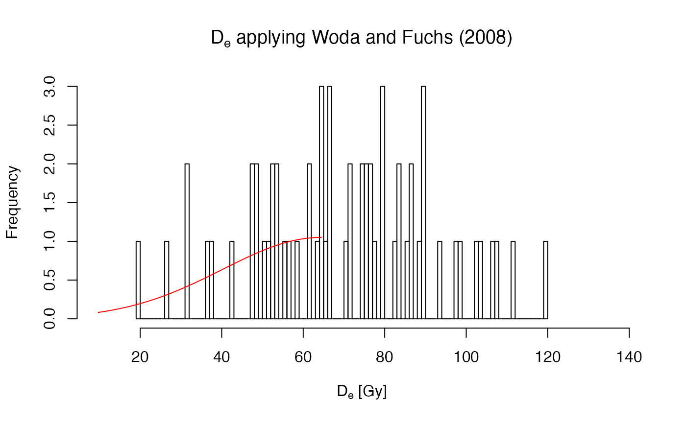

R/calc_WodaFuchs2008.R
calc_WodaFuchs2008.RdThe function generates a histogram-like reorganisation of the data, to assess counts per bin. The log-transformed counts per bin are used to calculate the second derivative of the data (i.e., the curvature of the curve) and to find the central value of the bin hosting the distribution maximum. A normal distribution model is fitted to the counts per bin data to estimate the dose distribution parameters. The uncertainty of the model is estimated based on all input equivalent doses smaller that of the modelled central value.
calc_WodaFuchs2008(data, breaks = NULL, plot = TRUE, ...)
| data | data.frame or RLum.Results object (required):
for data.frame: two columns: De ( |
|---|---|
| breaks | numeric:
Either number or locations of breaks. See |
| plot | logical (with default): enable plot output. |
| ... | Further plot arguments passed to the function. |
0.2.0
Kreutzer, S., Dietze, M., 2021. calc_WodaFuchs2008(): Obtain the equivalent dose using the approach by Woda and Fuchs 2008. Function version 0.2.0. In: Kreutzer, S., Burow, C., Dietze, M., Fuchs, M.C., Schmidt, C., Fischer, M., Friedrich, J., Mercier, N., Riedesel, S., Autzen, M., Mittelstrass, D., Gray, H.J., 2021. Luminescence: Comprehensive Luminescence Dating Data Analysis. R package version 0.9.11. https://CRAN.R-project.org/package=Luminescence
Woda, C., Fuchs, M., 2008. On the applicability of the leading edge method to obtain equivalent doses in OSL dating and dosimetry. Radiation Measurements 43, 26-37.
Sebastian Kreutzer, Geography & Earth Sciences, Aberystwyth University (United Kingdom),
Michael Dietze, GFZ Potsdam (Germany)
, RLum Developer Team
## read example data set data(ExampleData.DeValues, envir = environment()) results <- calc_WodaFuchs2008( data = ExampleData.DeValues$CA1, xlab = expression(paste(D[e], " [Gy]")) )#> Warning: [calc_WodaFuchs()] More than one maximum. Fit may be invalid!